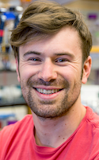

|  |
Andy Shumaker is a biotechnologist with 5 years of experience in synthetic biology, directed evolution of industrial enzymes, and genetic engineering of diverse microorganisms. He is pursuing a PhD in Chemical Biology at Harvard and works in the lab of Pamela Silver studying the gut microbiota and probiotic bacteria. |
|
David Heller is an undergraduate at MIT studying biological engineering. His past research dealt with development of a photosynthetic insulin-producing cell from an algae-insulinoma cell hybrid (Heller et al, Microscopy and Microanalysis 2014). He then spent two years in the lab of Dr. Robert Langer at the Koch Institute for Integrative Cancer Research at MIT. |
|
Harry McNamara is pursuing his PhD in Physics at Harvard, and he is affiliated with the Harvard-MIT Division of Health Sciences and Technology (HST). He has a broad interdisciplinary background across physics, biology and engineering. Recent projects have involved engineering synthetic bioelectric tissues (McNamara et al, PRX 2016) and optical control of development in zebrafish. |
|
Shara Ticku is a second-year MBA student at Harvard Business School. Prior to business school, Shara worked at Goldman Sachs and the Clinton Health Access Initiative. She has deep experience in sales, business development and prospecting, as well as in managing technical teams to develop and deploy groundbreaking technologies across global health supply chains, with a focus in Africa. Most recently, she managed the development of a deep learning embryo prediction algorithm that was implemented in fertility clinics across the United States. |